COLECCIÓN
Cerámica Artesanal
Piezas únicas hechas a mano, moldeadas y horneadas con dedicación.
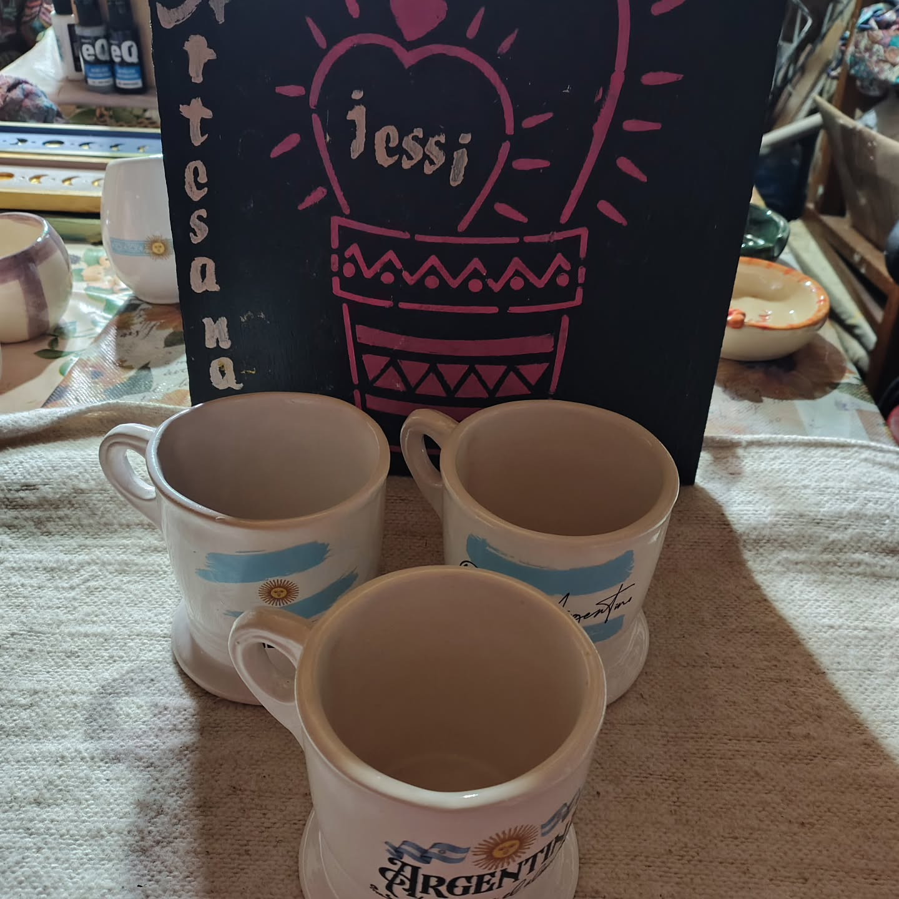
Taza Artesanal
Taza modelada a mano con esmalte apto para vajilla.

Plato Botánico
Plato artesanal con texturas e impresiones orgánicas.
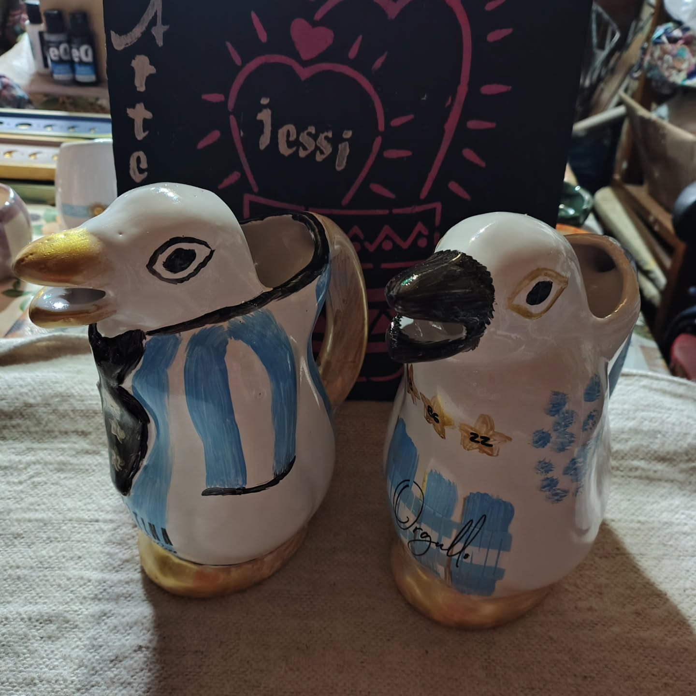
Jarra Pinguino
Diseño estilizado ideal para flores secas o frescas.
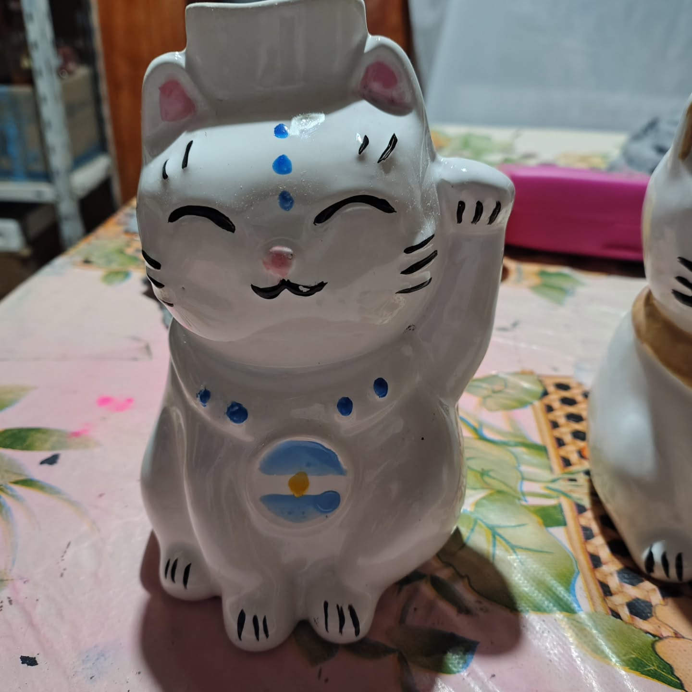
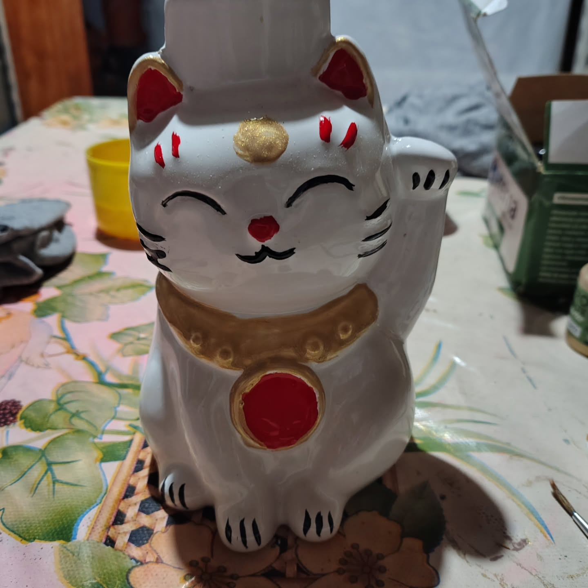
Portalampara de Gato de la Suerte
Portalampara de Cerámica, hecha a mano.
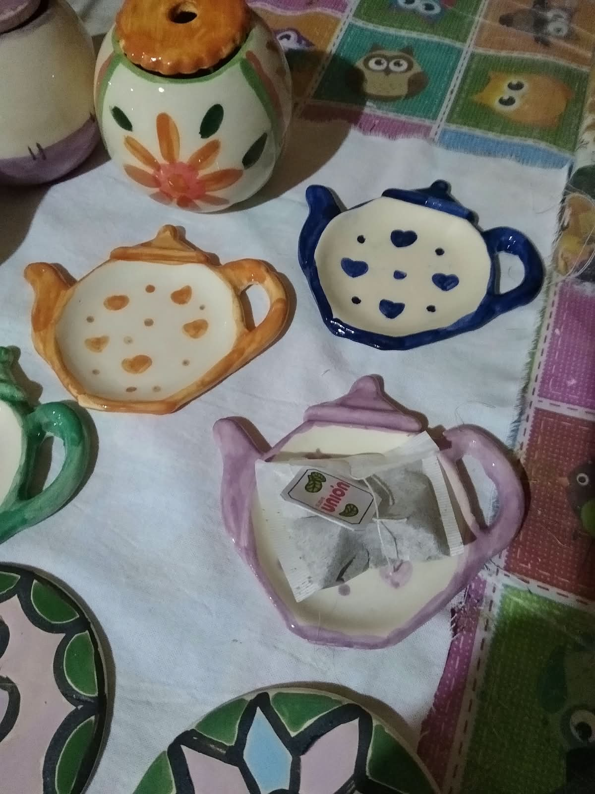
Apoya-Saquitos
Apoya saquitos de ceramica, hecho a mano
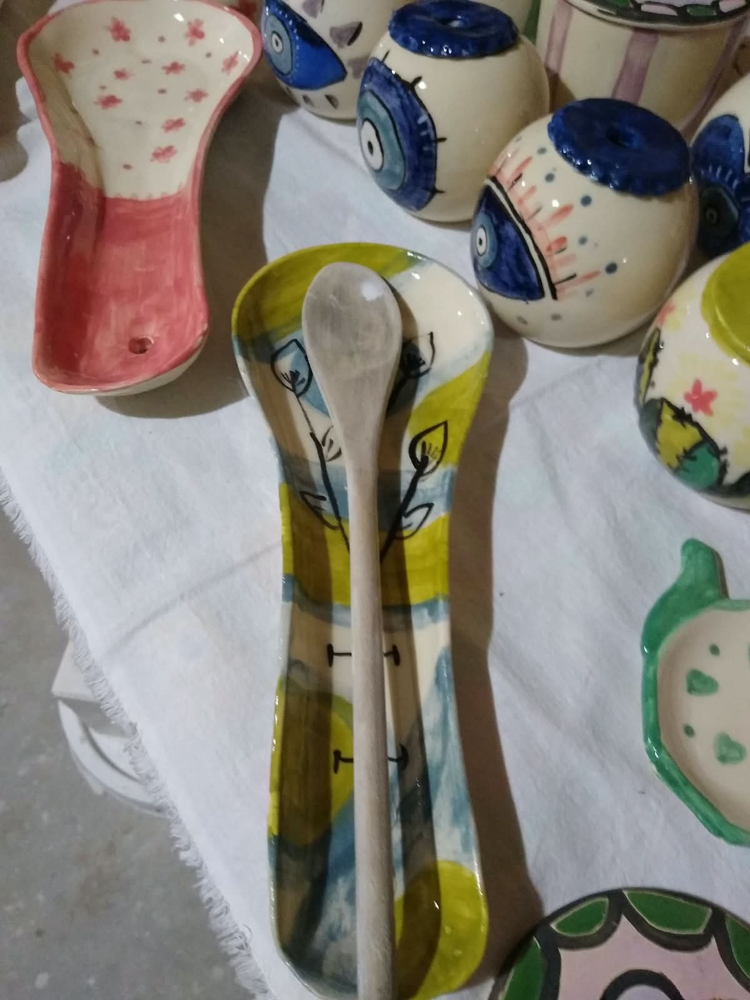
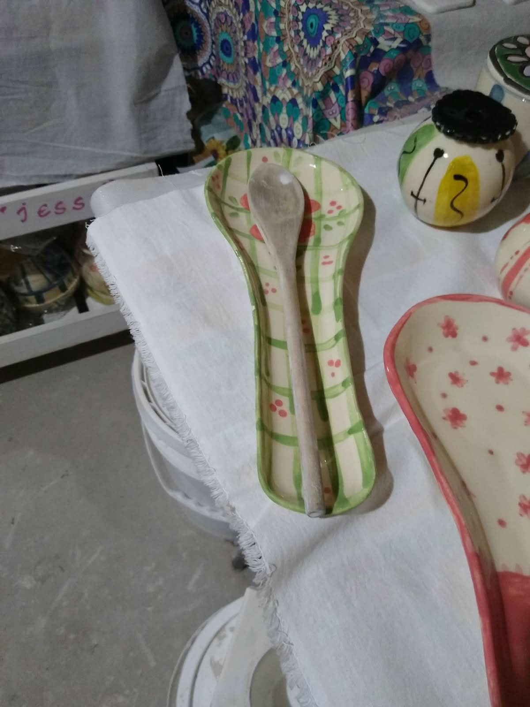
Portacuchara de Cerámica
Portacuchara de Cerámica, hecha a mano.
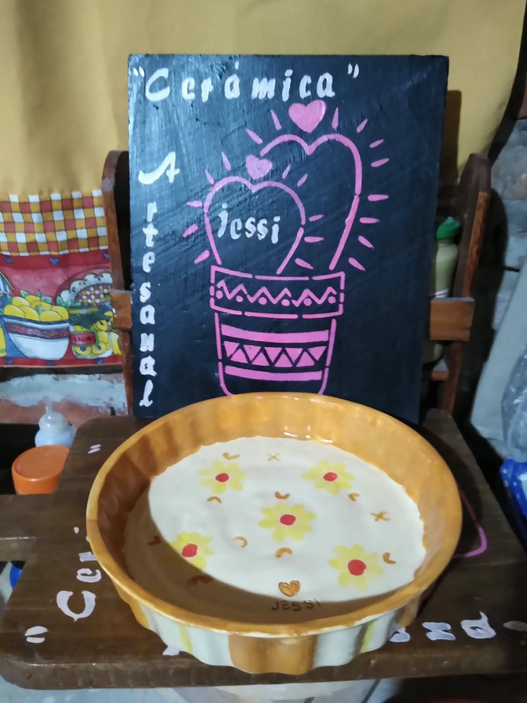
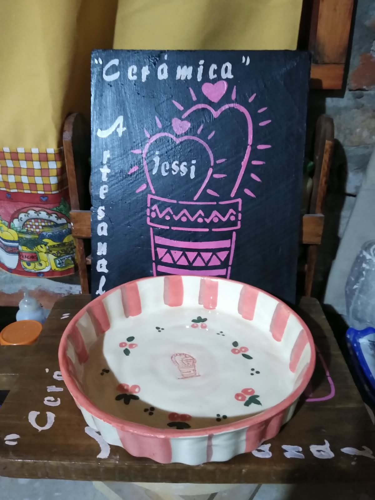
Plato de Cerámica
Plato de Cerámica, hecha a mano.
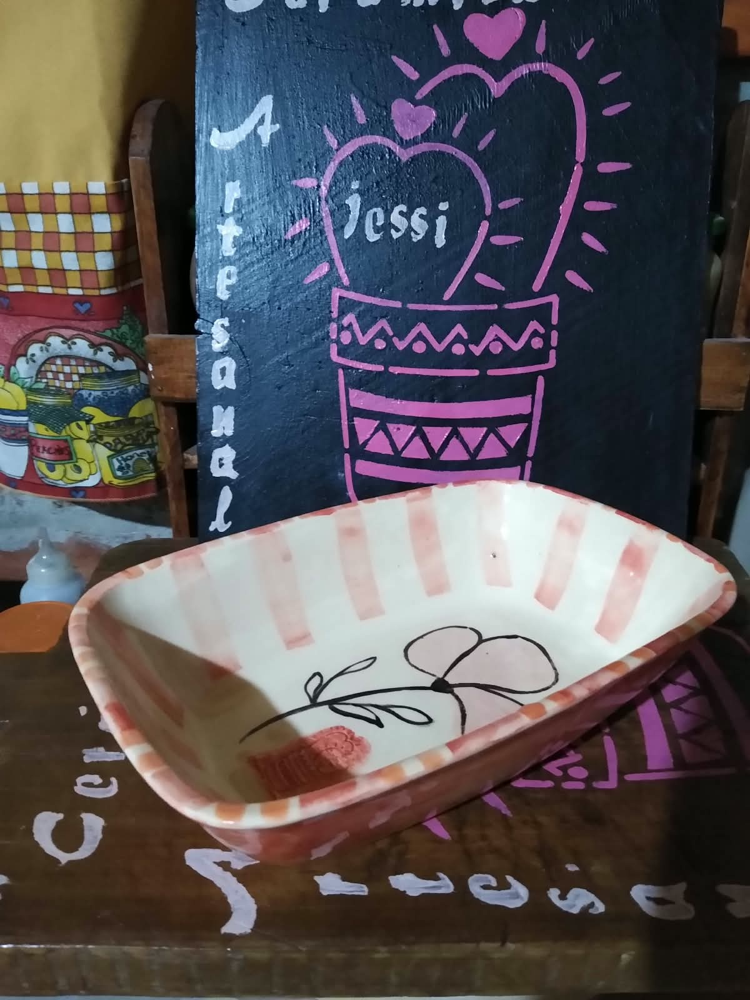
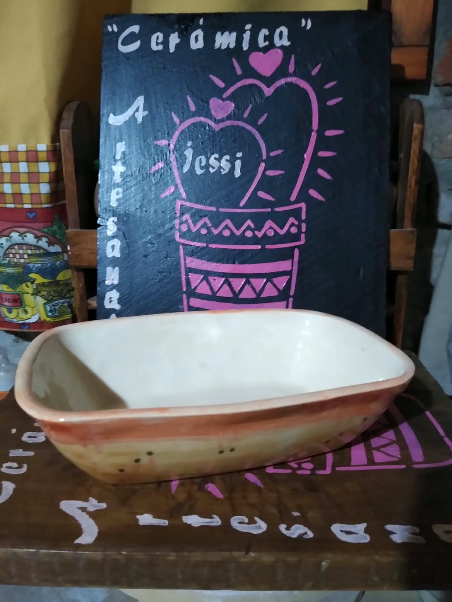
Bandeja de Cerámica
Bandeja de Cerámica, hecha a mano.